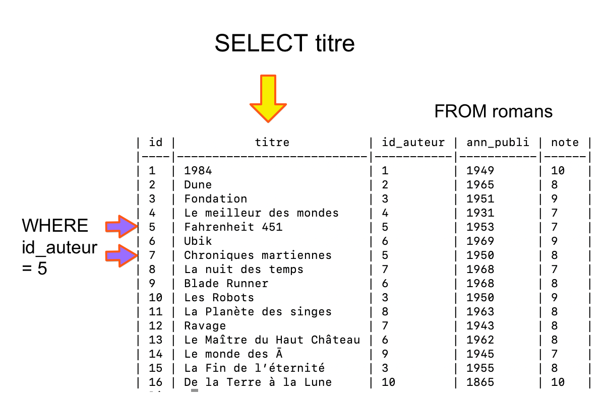
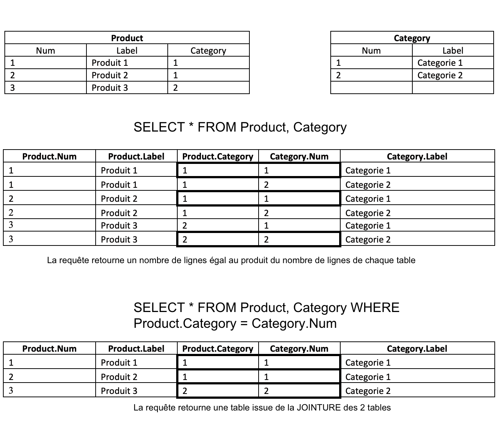

langage SQL
Langage SQL
SQL: structured query langage = langage de requêtes structuré est un langage informatique de dialogue avec une base de données relationnelle (un fichier qui organise les données sur une ou plusieurs tables).
Une requête est une question posée à une base de données. Nous allons voir comment sont écrites les requêtes de base en SQL. Une requête est la traduction d’une relation écrite en algèbre relationnelle.
L’algèbre relationnelle est un outil créé par le chercheur E. Codd (1970) pour manipuler les tables dans le modèle relationnel. Ses principales opérations sont: SELECTIONNER certaines colonnes (Projection) ou certaines lignes (selection) d’une table, mais aussi de combiner 2 tables.
Chaque opération SQL prend en entrée une ou plusieurs tables et renvoie une table.

version pdf
Voyons dans un premier temps les requêtes utiles pour CREER, SUPPRIMER, REMPLIR et MODIFIER la table
Creation, modification de table
CREATE TABLE “nom_table” (schema relation);
Créons la table:
Nom_eleve |
Classe |
Math |
Anglais |
Info |
|---|---|---|---|---|
| Kevin | 209 | 16 | 17 | 18 |
| Zoe | 209 | 5 | 15 | 17 |
| Toto | 210 | 4 | 6 | NULL |
CREATE TABLE va permettre d’indiquer le schéma d’une relation, avec ses Attributs et Domaines. Les types (ou domaines) les plus courants sont parmi:
- INTEGER, entier positif ou nul
- TEXT, CHAR(n), chaine de caractères
- DATE, format de date du type YYYY-MM-DD
- REAL, une valeur décimale
On peut ajouter des contraintes (constraints) en paramètre : PK (Primary Key), UNIQUE (dans une colonne, les valeurs doivent être uniques à chaque ligne), AUTOINCREMENT, NOT NULL (doit comprendre une valeur), DEFAULT ‘Not Applicable’ (la valeur mise par défaut si vide).
INSERT INTO “nom_table” (Attributs) VALUES (n-uplet1), (n-uplet2), …;
On insère les valeurs dans la table:
("Doe", 16, 17, 18) est un argument contenant les valeurs à insérer.
Remarque: si un enregistrement n’existe pas, il faudra mettre NULL
UPDATE <table> SET <attribut = valeur> WHERE <attribut = valeur>
Pour modifier des valeurs
DELETE FROM <table> WHERE <condition>
Supprimer des lignes
ALTER TABLE <table> ADD COLUMN <Attribut Domaine>
pour modifier la table
pour Renommer une colonne:
pour Renommer la table:
DROP TABLE <table>
Supprimer une table
Les CLAUSES SQL
Les mots-clefs SELECT, FROM, WHERE, GROUP BY, HAVING et ORDER BY sont appelés des clauses.

clauses SQL sur la tables des romans
SELECT <attributs> FROM nom_table
SELECT est la commande qui retourne la table selon les attributs choisis. Il s’agit d’une Projection comme type d’opération relationnelle.
Une projection est un type de sélection où seulement une partie des attributs des tables choisies est retenue pour le résultat.
FROM est la table concernée.
Pour avoir toutes les colonnes, faire:
ou bien seulement certaines:
On peut renommer une colonne avec l’alias AS, et choisir un nom plus pratique.
SELECT DISTINCT retourne les éléments de manière unique.
Et limiter le nombre de lignes à 10 par exemple:
SELECT DISTINCT <attributs> FROM nom_table
L’ajout du mot-clé DISTINCT, ne va retourner qu’une seule fois les lignes pour chaque valeur d’une colonne donnée. Il n’y aura pas de doublon, seule la première occurence est retournée.
WHERE <condition>
La clause WHERE permet de SELECTIONNER des lignes à partir de conditions dans les requêtes, mais aussi de realiser des JOINTURES (voir plus loin)
Exercice: Représenter la table
Table_notes(En-tête et contenu de la colonne) qui sera retournée par cette requête.
AVG SUM MIN MAX COUNT
Ce sont des fonctions d’agregation, qui retournent un resultat évalué sur la colonne issue de la SELECTION
Exemple1: Combien d’élèves ont plus de 15 en math dans la table Table_notes?
Exemple2: Combien de romans de l’auteur id_auteur =5 y-a-t-il dans la table romans?
- COUNT(*) va compter le nombre de lignes pour la selection donnée
- SUM(attribut) va faire la somme pour les valeurs de l’attribut et pour la selection donnée
- AVG(attribut) calcule la moyenne
- MIN(attribut) retourne la valeur min, MAX(attribut) la vakeur max
Exercice: Ecrire la requête qui calcule la moyenne de math pour tous les élèves de la table
Table_notes
GROUP BY <uneTable.attribut1>
Permet de regrouper des lignes les unes avec les autres.
Pour regrouper des lignes d’une table selon un attribut, il faut que ces lignes aient la même valeur pour cet attribut.
GROUP BY s’utilise avec des agrégats.
Exemple: Quel total de notes figure dans la table romanspour chaque auteur?
Exercice: Ecrire une requête qui calcule la moyenne des notes obtenues par écrivain sur la table Romans.
ORDER BY <colonne> ASC [DESC]
Trions les lignes par ordre croissant des notes en math:
Sinon par ordre descendant: ORDER BY Math DESC
Exercice: Représenter le tableau retourné par la requête écrite en exemple.
Exercice: Ecrire une requête qui calcule la moyenne des notes obtenues par écrivain sur la table Romans et qui classe ces auteurs par ordre de note moyenne décroissante.
Remarque: On peut aussi rajouter une clause sur le nombre de lignes retournées avec LIMIT <nombre> Très pratiques pour de grandes tables.
‘GROUP BY … HAVING`
La clause HAVING permet d’effectuer une selection sur des valeurs issues de regroupements.
Par exemple, on ne pourra pas écrire:
mais:
WHERE <colonne> LIKE <motif> et WHERE <colonne> IN <tuple>
LIKE
On peut faire une recherche dans une table selon certains motifs. Pour cela, on utilise WHERE ... LIKE <suivi de caractères spéciaux>.
Caractères spéciaux:
- le caractère
%représente 0, 1 ou plus de caractères%spermet d’obtenir toutes chaines qui finissent par s, mais aussi le caractère unique s.
- le caractère
_représente un caractère uniquero_epermet d’obtenirrobeou bienrose
Exercice: Dans la relation
Elevesde schéma `((prenom, TEXT), (nom, TEXT), (nais, DATE), (rue, TEXT), (numero, INTEGER), (CP, INTEGER), (ville, TEXT), (email, TEXT)):
- Définir une requête qui permet d’obtenir tous les élèves nés en 2002
- Définir une requête qui permet d’obtenir tous les élèves habitant dans le département des Alpes Maritimes.
- Définir une requête qui permet d’obtenir tous les élèves ayant un compte e-mail chez l’opérateur laposte (du type pseudo@laposte.net)
IN
Pour faire une recherche dans une table selon une liste de critères, on utilise le mot clé IN
On peut par exemple rechercher les élèves qui habitent Nice, Saint-Laurent ou Cagnes-sur-mer dans la table Eleves:
Remarque: Cette syntaxe peut être ajoutée à l’opérateur NOT, ce qui fait NOT IN.
On peut avoir besoin d’extraire un groupe de lettres du texte. On utilise alors la fonction substr. Les paramètres attendus sont:
- nom de l’attribut
- rang du premier caractere (commence à 1)
- rang du dernier caractere.
Exemple: Recherche des élèves dont les noms commencent par ‘a’, ‘b’ ou ‘c’:
Exercice:
Ecrire une requête sur la table Eleves qui retourne les noms des élèves dont la famille habite dans les départements (‘06’, ‘83’, ‘05’)
Jointure
Pour eviter les redondances, on a vu qu’il était préférable de répartir les données sur plusieurs tables, chaque table modélisant UNE seule entité.
La jointure permet de mettre en relation plusieurs tables, par l’intermédiaire des liens qui existent en particuler entre la clé primaire de l’une et la clé étrangère de l’autre. La jointure est une opération de sélection car elle permet de ne retenir que les enregistrements pour lesquels la valeur de la clé primaire d’une table correspond à la valeur de la clé étrangère d’une autre table.

exemple de jointure entre 2 tables
Pour joindre 2 tables complètes:
- 1ere méthode:
à la 4e ligne : on declare comment les 2 tables sont combinées : on veut faire correspondre la colonne ìd_customersde la table orders avec celle ìd_customersde la table customers.
Comme le nom d’une colonne va se retrouver dans de nombreuses tables, on utilisera la syntaxe : table_name.column_name
- 2e méthode: